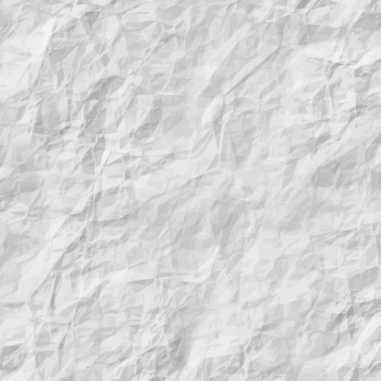

Comer sua comida predileta.
Andar de bicicleta em um dia lindo.
Estar com seus amigos.
Almoçar com sua familia.
Ajudar um desconhecido.
Assistir seu filme predileto.
Fazer carinho em um animal.
Dançar sua musica favorita.
Andar na praia em um belo fim de tarde.
Ver o por do sol com sua pessoa favorita.

Eu daqui 10 anos.
Bom meu nome e Raiana, tenho 26 anos, me formei recentemnte em Medicina Veterinaria, e junto estou concluido meu curso de administraçao para logo abrir minha clinica de Veterinaria e estou me planejando para participar de palestras internacionais, para reforçar meus conhecimentos.
Estou bem satisfeitas em questoes materiais, conquistei tudo que quis e conquitarei muito mais ainda.
Tenho muitas metas a realizar ainda, porém essas sao as concluidas até agora, mas vou realizar todas em breve!
Quadro dos meus sonhos
Viajar o mundo á fora e conhecer novas culturas.
Realizar meu intercambio.
Me formar na aréa que sonho.
Conquistar meu proprio consultorio de veterinária.
Conquistar meus bens materiais.
Criar minha ong: Para ajudar os animais necessitados.
.jpeg)